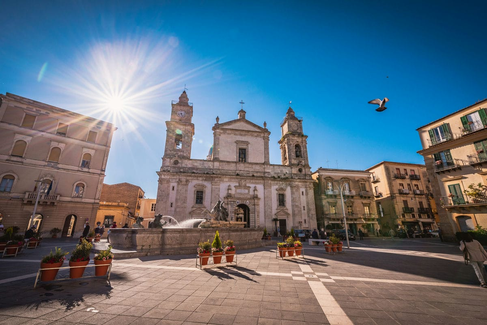
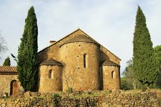
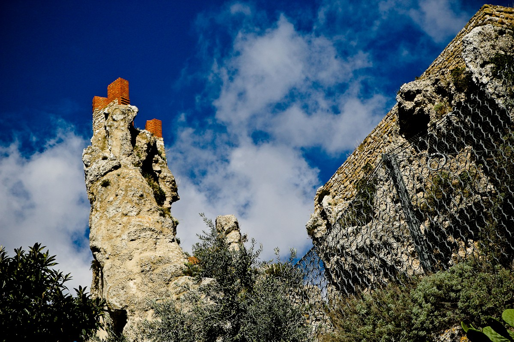

Piazza Duomo,
Caltanissetta

Piazza Garibaldi
La Piazza Garibaldi è il cuore storico e civile della città di Caltanissetta, un luogo che racchiude secoli di vita urbana e tradizioni profondamente radicate. Situata nel centro cittadino, questa piazza rappresenta il principale punto di incontro per residenti e visitatori, oltre a essere il fulcro delle attività sociali, religiose e culturali.
Dominata dalla scenografica Cattedrale di Santa Maria la Nova, la piazza colpisce per la sua armonia architettonica e per l’atmosfera raccolta ma vivace. La cattedrale, con la sua imponente facciata e gli interni riccamente decorati, è uno dei simboli più importanti della città e rappresenta un punto di riferimento visivo e spirituale. Accanto ad essa si trovano eleganti edifici storici e palazzi istituzionali che contribuiscono a definire il carattere della piazza.
Passeggiando per Piazza Garibaldi si percepisce una dimensione autentica e genuina: qui la vita scorre lentamente, tra conversazioni, eventi locali e momenti di quotidianità. La piazza è anche teatro delle celebrazioni religiose più sentite, in particolare quelle legate alla Settimana Santa di Caltanissetta, una delle più suggestive della Sicilia, che attira ogni anno numerosi visitatori. Durante queste occasioni, lo spazio si anima di processioni, luci e tradizioni antiche, offrendo un’esperienza intensa e coinvolgente.
Dal punto di vista storico, la piazza ha accompagnato l’evoluzione della città, da centro agricolo e minerario a realtà urbana moderna. Pur non essendo sfarzosa come altre piazze siciliane, conserva un fascino discreto, fatto di equilibrio, memoria e identità locale.
Una curiosità interessante riguarda proprio il suo ruolo sociale: ancora oggi è il luogo dove si svolgono manifestazioni pubbliche, incontri e momenti collettivi, mantenendo viva la sua funzione di “salotto” cittadino.


Palazzo Moncada
Un elegante edificio storico in stile barocco, noto per la sua facciata decorata. Oggi ospita eventi culturali e mostre, ed è facilmente reperibile in molte immagini online.

Abbazia di Santo Spirito
Un luogo suggestivo immerso nella tranquillità, con affreschi medievali di grande valore. Perfetto per chi cerca un’esperienza più intima e ricca di storia.

Castello di pietra rossa
Antica fortezza di origine medievale, situata su una posizione panoramica che domina la città. Oggi in parte in rovina, conserva un fascino suggestivo e misterioso, ed è uno dei luoghi storici più riconoscibili di Caltanissetta.